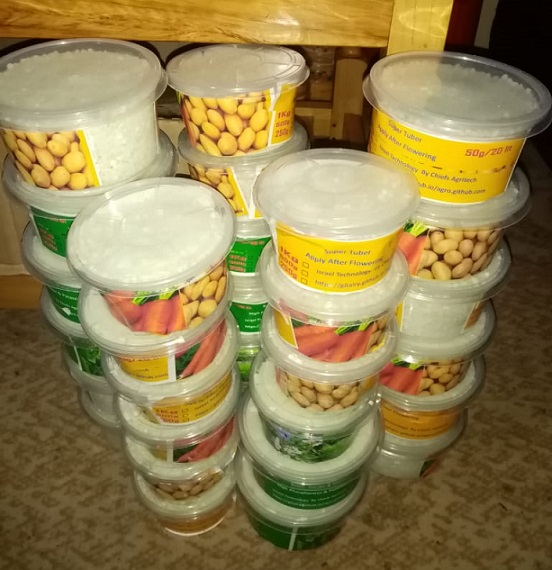

The Chief's Agritech Consultancy
We would like to introduce you to our new products that we have developed. Contact us on our About page,or via email and phone number that appear on our face book page

The below image displays a starter and vegetative foliar fertilizer This is applied from germination till flowering stage of vegetables. This fertilizer is high in phosphorus and potassium.

In the yellow package is our finishing foliar fertilizer Applied after flowering during fruit setting. Make potato tubers, cabbage head, tomato fruits etc big Protect tomato against brossom end rot.
We keep posting newer material, blogs, articles and other interesting farming related content on our facebook page.Check it out and feel free to reach out to us while there.